Révision du contrôle du 19 novembre
Lis une partie, réponds aux questions dans ta tête, puis touche « Voir la réponse ». Préparer l'examen
La présentation de révision du professeur (64 diapositives), remise en ordre et expliquée. Les sept parties suivent l'ordre des diapositives. Quand une diapositive ne donne qu'un titre ou un mot, l'explication vient du cours : c'est signalé par « Du cours ». À la fin de chaque partie, des questions de contrôle avec la réponse cachée.
Ce que le professeur demande de connaître sur les polymères (sa première diapositive) :
- la masse moléculaire et son importance ;
- l'état physique : vitreux, caoutchouteux, semi-cristallin ;
- la température de transition ;
- l'orientation ;
- les principaux additifs et leur rôle ;
- l'effet des charges et des renforts sur la rigidité ;
- la loi des mélanges et l'orientation des fibres.
Puis la révision passe aux procédés, aux dispositifs médicaux, aux métaux et aux céramiques.
Les polymères : structure et familles
Un polymère est fait de très longues chaînes, les macromolécules. Leur forme décide de la famille :
| Famille | Forme des chaînes | À la chaleur |
|---|---|---|
| Thermoplastiques | linéaires ou ramifiées, non reliées | se ramollissent, on peut les remouler |
| Élastomères | réseau à mailles larges | restent souples, très déformables |
| Thermodurcissables | réseau à mailles serrées | ne se ramollissent plus, se dégradent |
À l'échelle des chaînes, un plastique est amorphe (chaînes en pelote, en désordre) ou partiellement cristallin (des zones où les chaînes sont rangées).
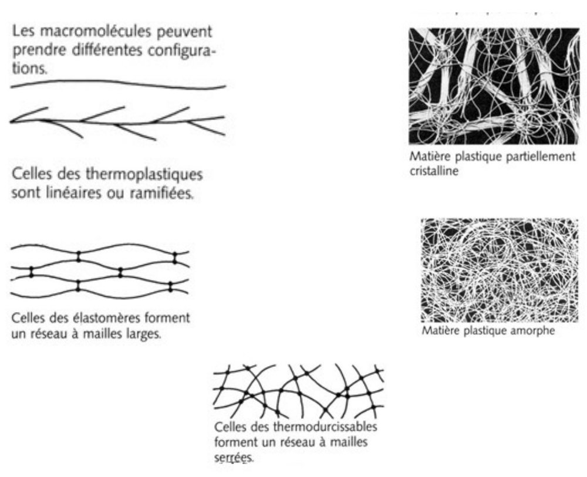
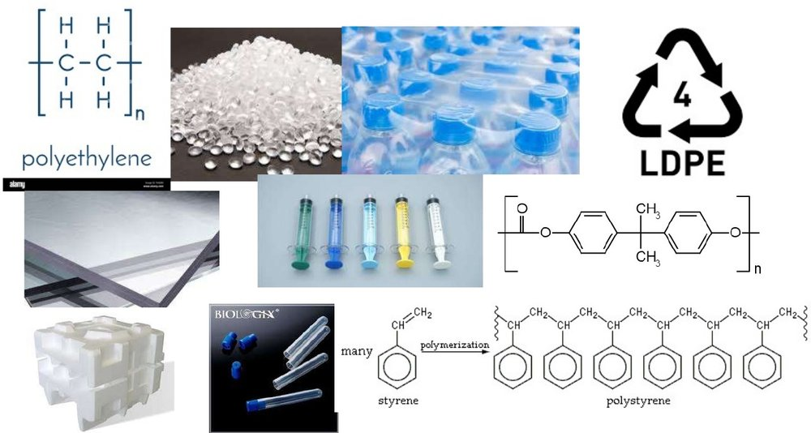
- Thermoplastiques : ils n'atteignent jamais l'état gazeux, ils se dégradent avant. Vendus en granulés, feuilles ou poudre. Exemples : polyéthylène (PE), polycarbonate (PC), polystyrène (PS).
- Thermodurcissables : une fois durcis et moulés, on ne peut plus les chauffer pour les reformer, ils se dégradent. On les moule à partir d'un semi-produit : résine + catalyseur. L'image du cours : un œuf cuit (thermodurcissable) ne redevient pas cru, un œuf en chocolat (thermoplastique) refond.
Élastomères et caoutchoucs
- Un élastomère ne subit qu'une déformation élastique : il supporte de grandes déformations et revient à sa forme.
- Un plastomère peut subir une déformation élastique accompagnée d'une déformation plastique (permanente).
- Ce qui rend les élastomères uniques : un module très faible, E ≈ 1 MPa (contre environ 1 GPa pour les plastiques), et des déformations énormes, jusqu'à 1000 %.
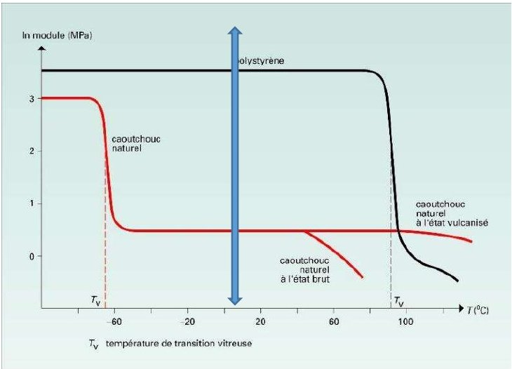
Lecture du graphique : à température ambiante, le polystyrène est encore sous sa température de transition vitreuse Tv (≈ 100 °C), donc rigide. Le caoutchouc naturel l'a déjà dépassée (Tv ≈ −60 °C), donc il est sur son plateau souple. Le caoutchouc brut finit par couler ; le caoutchouc vulcanisé garde son plateau.
La vulcanisation
- Un élastomère brut n'est pas prêt à l'emploi : au-dessus de Tg, des chaînes linéaires se comportent comme un liquide extrêmement visqueux.
- La vulcanisation crée une réticulation chimique : des liaisons covalentes (des ponts) entre les chaînes.
- Le système principal est au soufre (ponts S–S), ou un peroxyde organique.
- Effet du soufre : Tg et E augmentent sans faire disparaître le plateau caoutchouteux. À une température donnée (T > Tg), plus il y a de soufre, plus le module est élevé.
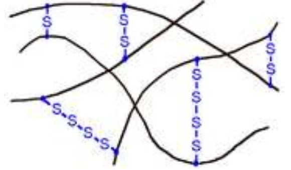
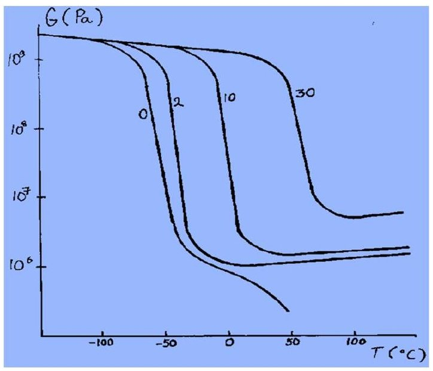
Polymérisation par addition
On ouvre la double liaison C=C du monomère pour l'accrocher au suivant. Le tableau du professeur :
| Monomère | Polymère | Sigle | Usage principal |
|---|---|---|---|
| éthylène CH₂=CH₂ | polyéthylène | PE | plastique |
| propylène | polypropylène | PP | plastique, fibres |
| chlorure de vinyle | polychlorure de vinyle | PVC | plastique |
| acrylonitrile | polyacrylonitrile | PAN | fibres |
| tétrafluoroéthylène CF₂=CF₂ | polytétrafluoroéthylène | PTFE | plastique |
| styrène | polystyrène | PS | plastique |
| méthacrylate de méthyle | polyméthacrylate de méthyle | PMMA | plastique |
| acrylate d'éthyle | polyacrylate d'éthyle | PEA | colles, peintures |
Quelle est la différence de structure entre un thermoplastique, un élastomère et un thermodurcissable ?
Voir la réponse
Thermoplastique : chaînes linéaires ou ramifiées, non reliées.
Élastomère : réseau à mailles larges.
Thermodurcissable : réseau à mailles serrées.
Pourquoi ne peut-on pas remouler un thermodurcissable ?
Voir la réponse
Une fois durci, son réseau serré ne fond plus : chauffé, il se dégrade au lieu de se ramollir.
Élastomère et plastomère : quelle différence ?
Voir la réponse
Élastomère : seulement une déformation élastique, il revient à sa forme.
Plastomère : une déformation élastique plus une déformation plastique, permanente.
Quelles sont les deux propriétés uniques des élastomères ?
Voir la réponse
Un module très faible, E ≈ 1 MPa (contre ≈ 1 GPa pour un plastique).
Des déformations jusqu'à 1000 %.
Qu'est-ce que la vulcanisation, et pourquoi la fait-on ?
Voir la réponse
Une réticulation chimique : des ponts covalents (soufre ou peroxyde) entre les chaînes.
Sans elle, au-dessus de Tg, le caoutchouc brut se comporte comme un liquide très visqueux.
Quel est l'effet du pourcentage de soufre sur un caoutchouc ?
Voir la réponse
Tg et E augmentent, le plateau caoutchouteux reste.
À une température donnée au-dessus de Tg, le module augmente avec le % de soufre.
Donne le sigle et un usage du polymère obtenu à partir du tétrafluoroéthylène, puis du méthacrylate de méthyle.
Voir la réponse
Tétrafluoroéthylène : PTFE, plastique.
Méthacrylate de méthyle : PMMA, plastique.
États, Tg et cristallinité
Le polymère amorphe qu'on chauffe
Sous une contrainte, les chaînes s'étirent, puis veulent revenir à l'équilibre : c'est la relaxation (désenchevêtrement, puis réenchevêtrement). La contrainte décroît avec le temps. Le temps nécessaire dépend de la longueur des chaînes.
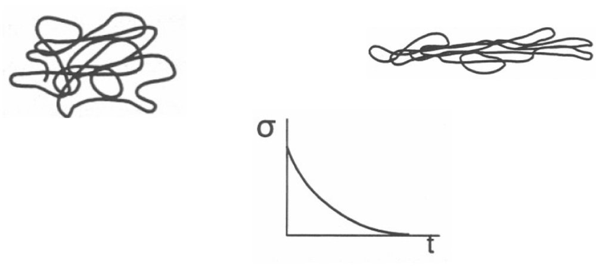
La courbe la plus importante de la révision : le module de relaxation Er (en log) quand on chauffe un polymère amorphe.
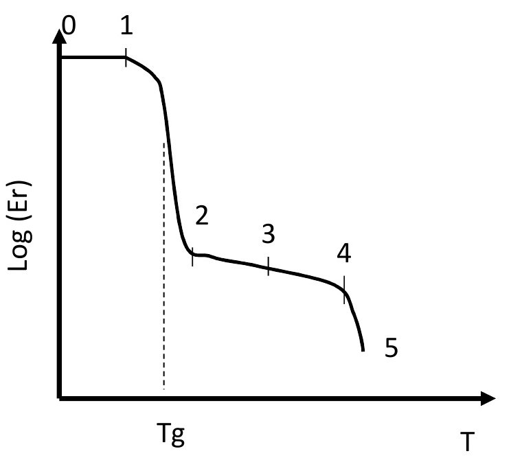
| Zone | État | Ce qui se passe |
|---|---|---|
| 0–1 | vitreux | basse température : une déformation écarte seulement les atomes, le polymère est rigide |
| 1–2 | transition vitreuse | chute importante du module autour de Tg |
| 2–3 | plateau caoutchouteux | de longues sections de chaînes peuvent bouger |
| 3–4 | transition caoutchouc-liquide | les chaînes commencent à glisser |
| 5 | liquide | le polymère coule |
Du cours : Tg (ou Tv) est la température de transition vitreuse, où le polymère passe de l'état rigide (vitreux) à l'état souple (caoutchouteux).
Effet de la masse moléculaire
- Plus la masse moléculaire est grande (chaînes plus longues), plus l'apparition du liquide est repoussée vers les hautes températures : le plateau caoutchouteux s'allonge.
- Pour une masse moléculaire infinie (chaînes toutes reliées), le polymère n'atteint jamais l'état liquide.
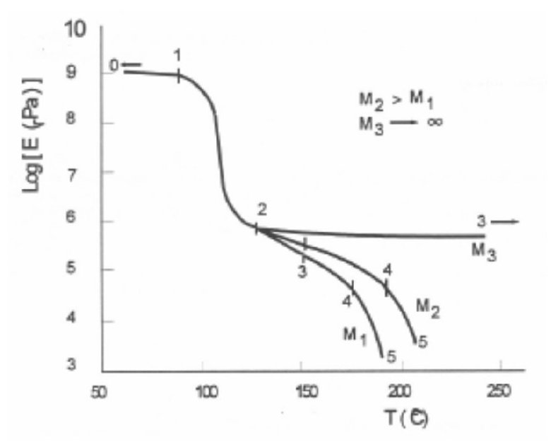
Les polymères semi-cristallins
- Deux phases coexistent : la phase cristalline, avec sa densité ρc et sa température de fusion Tf, et la phase amorphe, avec sa densité ρa et sa Tg.
- Un polymère cristallise si : T ≪ Tf, T ≫ Tg (les chaînes doivent pouvoir bouger), des chaînes flexibles et des chaînes régulières.
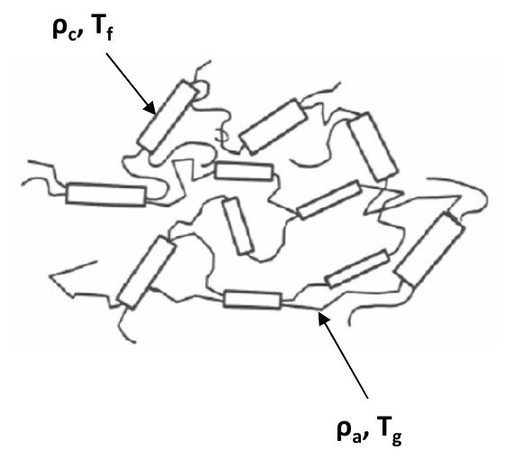
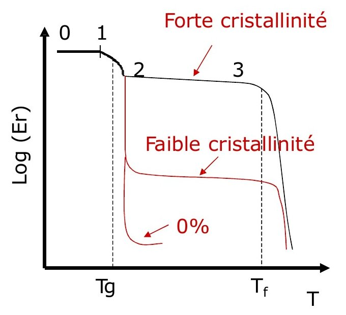
Taux de cristallinité X : la fraction du polymère à l'état cristallin. On le mesure par la densité :
\[\rho = \rho_c X + \rho_a (1 - X) \qquad X = \frac{\rho - \rho_a}{\rho_c - \rho_a}\]Influence : plus X est grand, plus la chute du module à Tg est faible (les cristaux tiennent la matière jusqu'à Tf). À 0 % (amorphe), le module s'effondre à Tg.
Quelques polymères à connaître
| Sigle | Tg (°C) | Tf (°C) | À l'ambiante |
|---|---|---|---|
| PP | −18 | 170 | semi-cristallins, plastiques modérément fragiles (≈ 1 GPa) |
| PE | −120 | 140 | |
| POM (acétal) | −50 | 181 | |
| PVC | 90 | – | amorphes et fragiles |
| PMMA | 105 | – | |
| PS | 100 | – | |
| PdMS (silicone) | −123 | −80 | caoutchouteux, utilisés comme caoutchoucs |
| PB | −73 | 28 |
L'arbre du professeur pour prévoir le comportement d'un polymère à partir de Tg :
- Tg ≫ T ambiante (cristallin ou non) : plastique, E ≈ 1 à 3 GPa.
- Tg < T ambiante et peu cristallin : si les chaînes sont réticulées (masse moléculaire infinie), élastomère, E ≈ 1 MPa ; sinon, liquide.
Décris les cinq zones de la courbe du module d'un polymère amorphe qu'on chauffe.
Voir la réponse
0–1 : état vitreux, rigide.
1–2 : transition vitreuse, chute du module à Tg.
2–3 : plateau caoutchouteux.
3–4 : transition caoutchouc-liquide.
5 : état liquide.
Qu'est-ce que Tg ?
Voir la réponse
La température de transition vitreuse : le polymère passe de l'état vitreux (rigide) à l'état caoutchouteux (souple).
Quel est l'effet de la masse moléculaire sur l'état d'un polymère ?
Voir la réponse
Plus elle est grande, plus le liquide apparaît à haute température.
Masse moléculaire infinie (réticulé) : jamais liquide.
Qu'est-ce que la relaxation, et de quoi dépend sa durée ?
Voir la réponse
Le retour des chaînes étirées vers l'équilibre (désenchevêtrement, réenchevêtrement) : la contrainte diminue avec le temps.
Sa durée dépend de la longueur des chaînes.
À quelles conditions un polymère cristallise-t-il ?
Voir la réponse
T ≪ Tf.
T ≫ Tg (mobilité des chaînes).
Chaînes flexibles.
Chaînes régulières.
Écris la formule du taux de cristallinité par la densité.
Voir la réponse
\(\rho = \rho_c X + \rho_a (1 - X)\)
\(X = (\rho - \rho_a)/(\rho_c - \rho_a)\)
Comment le taux de cristallinité change-t-il la courbe du module ?
Voir la réponse
Plus X est grand, plus la chute du module à Tg est faible : le matériau reste rigide jusqu'à Tf.
À l'ambiante, dans quel état sont le PE, le PMMA et le silicone ?
Voir la réponse
PE : semi-cristallin (plastique modérément fragile).
PMMA : amorphe et fragile (Tg = 105 °C).
Silicone : caoutchouteux.
Selon l'arbre de Tg, quand obtient-on un plastique, un élastomère ou un liquide ?
Voir la réponse
Tg ≫ T ambiante : plastique, E ≈ 1 à 3 GPa.
Tg < T ambiante et réticulé : élastomère, E ≈ 1 MPa.
Tg < T ambiante et non réticulé : liquide.
Additifs, charges et renforts
Chaque additif corrige un défaut du polymère :
| On veut agir sur | Additif | Effet |
|---|---|---|
| le coût | charge (filler) | baisse le coût |
| la rigidité | renfort / plastifiant | l'augmente / la baisse |
| la densité | agents gonflants, billes creuses | la baissent |
| la couleur | colorants, pigments | |
| la résistance au feu | ignifugeants | |
| la résistance aux UV | stabilisants |
Les plastifiants
Un plastifiant est un solvant lourd qui, incorporé au polymère, détruit en partie les interactions entre chaînes responsables de la cohésion mécanique : il transforme un matériau rigide en matériau souple, flexible. Sur la courbe, il abaisse Tg.
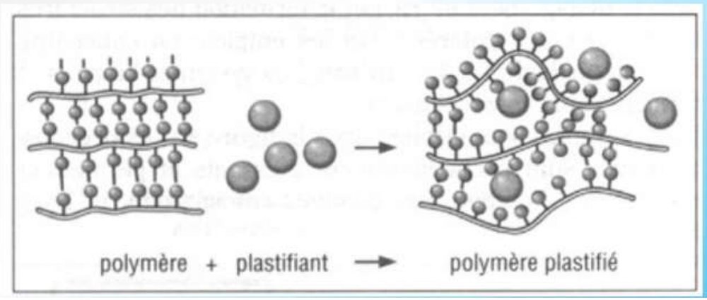
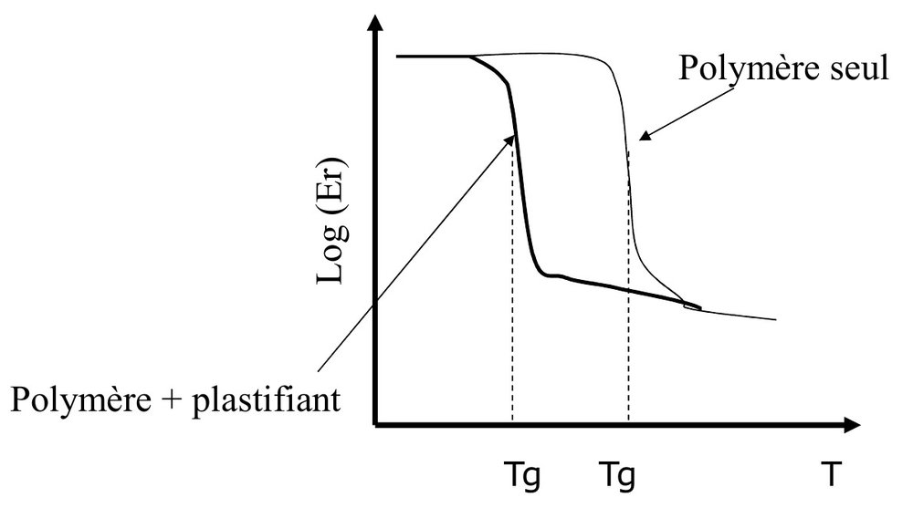
Les agents de réticulation
- Ils favorisent une structure tridimensionnelle : ils font durcir les résines « liquides » (exemple : polyester insaturé UP).
- Dans un caoutchouc (le soufre) : Tg et E augmentent, le plateau caoutchouteux reste (voir la vulcanisation plus haut).
Charges et renforts
Le carbonate de calcium (CaCO₃) est la charge la plus utilisée :
- particules irrégulières, rapport de forme proche de 1 ;
- surtout dans les thermodurcissables ;
- il augmente la rigidité à basse température, a peu d'effet à haute température ;
- il diminue la résistance au choc.
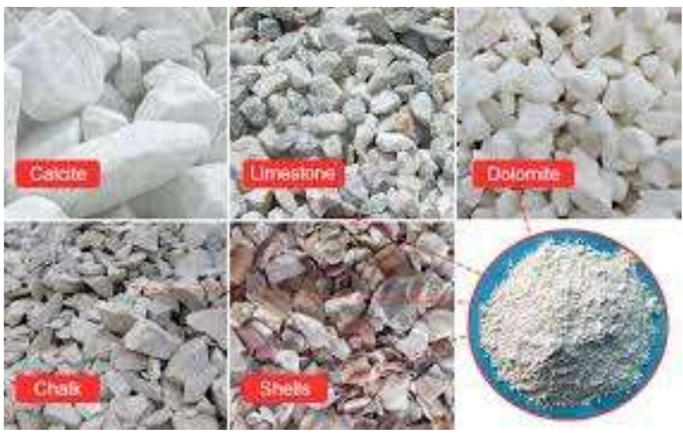
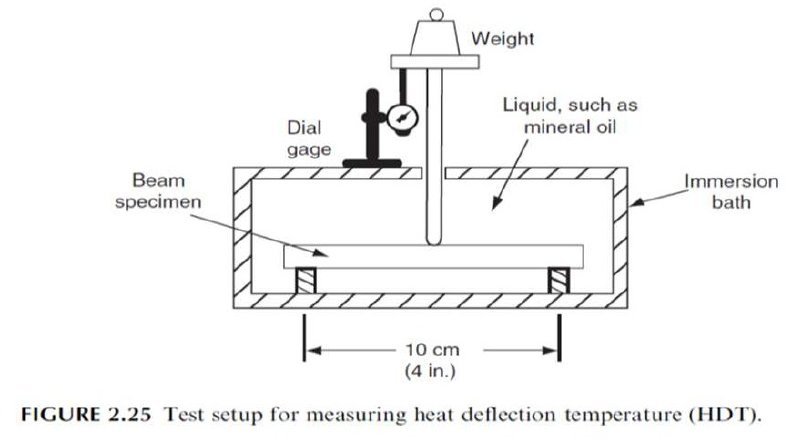
| Matériau | E (GPa) | HDT (°C) |
|---|---|---|
| polypropylène seul | 1,7 | 65 |
| PP + 40 % CaCO₃ | 2,8 | 75 |
| PP + 40 % talc | 4,2 | 97 |
| PP + 30 % fibres de verre | 6,5 | 148 |
À lire : plus la particule est allongée (CaCO₃ ≈ sphère, talc en plaquettes, fibre de verre très longue), plus E et la HDT montent. La HDT (heat deflection temperature, température de fléchissement sous charge) se mesure avec le montage de la diapositive : un barreau chargé dans un bain qu'on chauffe, jusqu'à ce qu'il fléchisse d'une valeur donnée. Elle dit jusqu'à quelle température la pièce garde sa rigidité.
Loi des mélanges et orientation des fibres (du cours)
La diapositive 1 les annonce sans les redétailler ; voici l'essentiel du chapitre « Les matériaux composites ».
- Loi des mélanges (tiré dans le sens des fibres) : \(E_{CL} = E_f \phi_f + E_m \phi_m\), avec φ les fractions volumiques (φf + φm = 1).
- Module transversal (tiré en travers) : \(\dfrac{1}{E_{CT}} = \dfrac{\phi_f}{E_f} + \dfrac{\phi_m}{E_m}\), beaucoup plus faible.
- Fibres orientées : \(E_{CL} = K_o E_f \phi_f + E_m \phi_m\), avec le coefficient d'orientation \(K_o = \sum a_n \cos^4\theta_n\) : 1 (fibres alignées), 0,5 (tissu 0/90), 0,375 (aléatoire dans le plan), 0 (perpendiculaires).
- Exemple du cours : verre \(E_f = 70\) GPa, résine \(E_m = 3\) GPa, \(\phi_f = 0{,}4\) : alignées 29,8 GPa, tissu 0/90 15,8 GPa, mat aléatoire 12,3 GPa.
Quel additif utiliser pour baisser le coût, augmenter la rigidité, la baisser, baisser la densité, résister au feu et aux UV ?
Voir la réponse
Coût : charge.
Augmenter la rigidité : renfort.
Baisser la rigidité : plastifiant.
Baisser la densité : agents gonflants, billes creuses.
Feu : ignifugeants.
UV : stabilisants.
Qu'est-ce qu'un plastifiant, et quel est son effet sur Tg ?
Voir la réponse
Un solvant lourd qui détruit en partie les interactions entre chaînes : le matériau devient souple.
Il abaisse Tg.
À quoi servent les agents de réticulation ?
Voir la réponse
À créer une structure tridimensionnelle : ils durcissent les résines liquides (polyester insaturé).
Quelles sont les caractéristiques du carbonate de calcium comme charge ?
Voir la réponse
La charge la plus utilisée, rapport de forme proche de 1, surtout dans les thermodurcissables.
Il augmente la rigidité à basse température, peu à haute température.
Il diminue la résistance au choc.
Classe CaCO₃, talc et fibre de verre selon leur effet sur le module et la HDT du PP. Pourquoi cet ordre ?
Voir la réponse
CaCO₃ (2,8 GPa, 75 °C) < talc (4,2 GPa, 97 °C) < fibre de verre (6,5 GPa, 148 °C).
Plus le renfort est allongé (rapport de forme grand), plus il rigidifie.
Composite verre-résine : Ef = 70 GPa, Em = 3 GPa, φf = 0,4, fibres alignées. Module longitudinal ?
Voir la réponse
\(E_{CL} = E_f \phi_f + E_m \phi_m\)
\(E_{CL} = 70 \times 0{,}4 + 3 \times 0{,}6 = 28 + 1{,}8\)
\(E_{CL} = 29{,}8\) GPa
Que vaut le coefficient d'orientation pour des fibres alignées, un tissu 0/90 et des fibres perpendiculaires ?
Voir la réponse
Alignées : 1.
Tissu 0/90 : 0,5.
Perpendiculaires : 0.
Les procédés de fabrication
Les procédés du cours : injection (et injection soufflage), extrusion (et extrusion soufflage, extrusion gonflage), rotomoulage, thermoformage. Pour chacun : le principe, des exemples, et l'indice qui permet de le reconnaître sur un objet.
| Procédé | Principe | Exemples | Indice |
|---|---|---|---|
| Injection | la matière est chauffée dans un cylindre, une vis sans fin prépare la dose, puis sert de piston pour l'injecter dans un moule fermé | bouchons, boîtes, corps de stylo, pièces automobiles, électriques, médicales | objet prêt à l'emploi, petit point d'injection |
| Injection soufflage | on injecte une préforme, on la chauffe et on la gonfle à l'air comprimé contre le moule | bouteilles, flacons, réservoirs | point d'injection au fond |
| Extrusion | la vis malaxe, compresse, cisaille, chauffe et pousse en continu la matière vers une filière | tuyaux, profilés, gaines, câbles | section constante, longueur continue |
| Extrusion soufflage | on extrude un tube chaud, on l'enferme dans un moule et on le gonfle | bouteilles, flacons, réservoirs | ligne de soudure au fond |
| Extrusion gonflage | à la sortie de la filière, on gonfle le tube en une longue bulle, on la refroidit, l'aplatit et l'enroule | sacs poubelle, sacs de congélation, films | film mince |
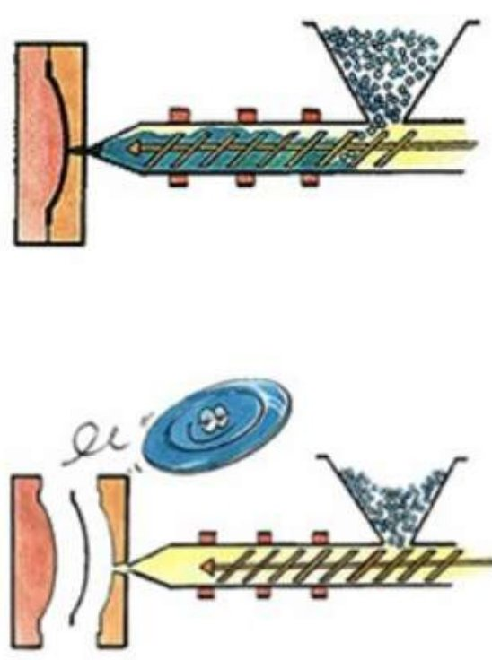
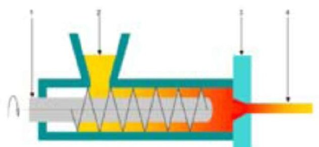
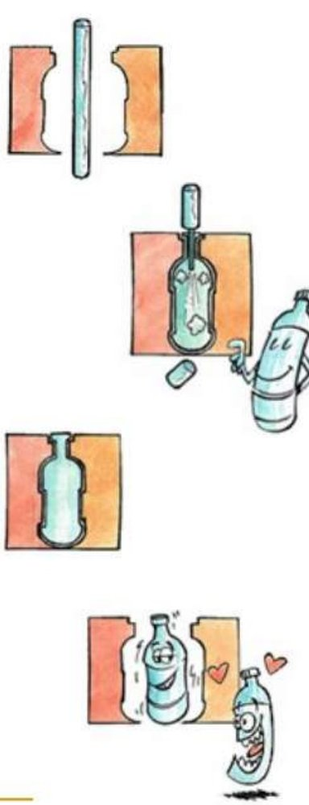
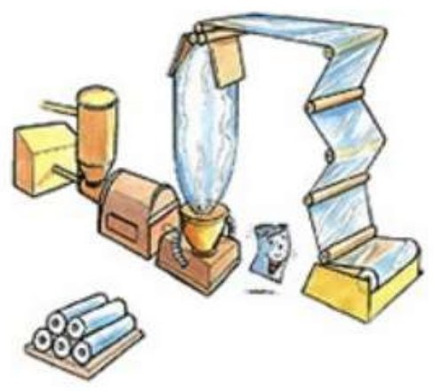
- Pour l'extrusion, on préfère un polymère de masse molaire élevée et de structure amorphe. L'extrudeuse s'appelle aussi boudineuse.
- Les variantes de l'extrusion : gainage, formage, calandrage, filière plate, soufflage, gonflage, filage, co-extrusion.
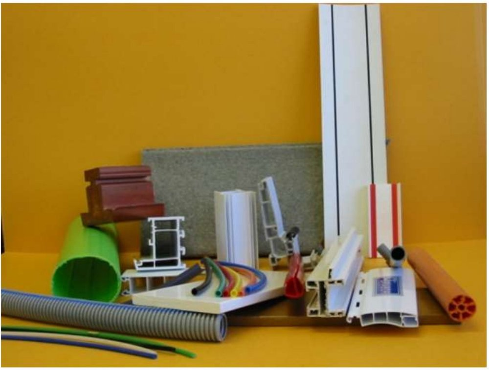
Les plastiques de grande diffusion
Les plastiques de commodité font 85 % du marché des plastiques. Ils ont une contrainte et une tenue en température faibles : PE (bouchons, films, réservoirs), PP (boîtes alimentaires, chaises), PVC (raccords, tuyaux transparents, portes), PS (barquettes, polystyrène expansé).
Décris le procédé d'injection et son indice.
Voir la réponse
La matière est chauffée et ramollie dans un cylindre, une vis sans fin prépare la quantité, puis devient piston et l'injecte dans un moule fermé.
Indice : objet prêt à l'emploi, avec un petit point d'injection.
Injection soufflage et extrusion soufflage font des bouteilles. Comment les distinguer sur l'objet ?
Voir la réponse
Injection soufflage : un point d'injection au fond.
Extrusion soufflage : une ligne de soudure au fond.
Quel est le rôle de la vis dans une extrudeuse ?
Voir la réponse
Elle malaxe, compresse, cisaille, échauffe et transporte en continu la matière fluide et homogène vers la filière.
Comment fabrique-t-on un sac poubelle ?
Voir la réponse
Par extrusion gonflage : le tube sorti de la filière est gonflé en une longue bulle, refroidi, aplati puis enroulé.
Quel type de polymère préfère-t-on pour l'extrusion ?
Voir la réponse
Une masse molaire élevée et une structure amorphe.
Que sont les plastiques de grande diffusion ?
Voir la réponse
PE, PP, PVC, PS : 85 % du marché, contrainte et tenue en température faibles.
Biomatériaux et dispositifs médicaux
- Un dispositif médical est un produit de santé, logiciels compris, à usage médical, dont le mode d'action principal n'est obtenu ni par voie pharmacologique, ni immunologique, ni par métabolisme.
- Un biomatériau est rarement utilisé seul : il est intégré dans un dispositif médical. C'est ce qui les différencie.
- Rôle des dispositifs médicaux : le diagnostic, la prévention, le contrôle, le traitement d'une maladie ; le diagnostic, le contrôle, le traitement, la réparation d'une blessure ou d'un handicap ; le remplacement ou la modification de l'anatomie ou d'un processus physiologique.
Exigences mécaniques d'un biomatériau
Selon le produit : résistance à la rupture, à l'usure, à la fatigue, au fluage, au choc.
Domaines d'application : la chirurgie orthopédique
Prothèses articulaires (hanche, coude, genou, poignet, cheville, épaule), orthèses et cartilage, ligaments et tendons artificiels, remplacement osseux (tumeur, traumatisme), chirurgie du rachis, réparation de fractures (vis, plaques, clous, broches), matériaux de comblement osseux injectables.
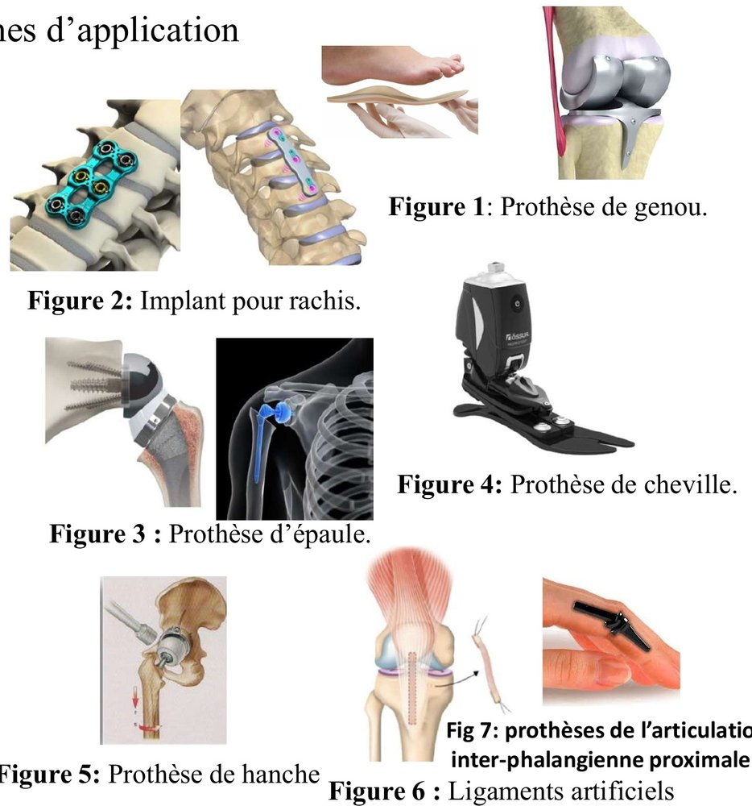
Les grandes classes de biomatériaux
- Aucun matériau ne satisfait toutes les exigences : un matériau plus rigide peut être moins résilient, un autre plus résistant à l'usure moins résistant à la fatigue. D'où le choix d'un matériau, ou plusieurs matériaux dans le même implant.
- Les familles : métalliques, céramiques, polymériques, composites, biomatériaux naturels.
- Exemple de la hanche : surface de contact → résistance à l'usure ; tige → rigidité et résistance à la fatigue ; partie dans l'os → compatibilité avec le tissu, résistance à la corrosion.
- Hydroxyapatite Ca₁₀(PO₄)₆(OH)₂ : le minéral de l'os, utilisé en revêtement des tiges et cupules pour qu'elles s'intègrent à l'os.
Qu'est-ce qu'un dispositif médical ?
Voir la réponse
Un produit de santé, logiciels compris, à usage médical, dont l'action principale n'est ni pharmacologique, ni immunologique, ni métabolique.
Qu'est-ce qui différencie un biomatériau d'un dispositif médical ?
Voir la réponse
Le biomatériau est rarement utilisé seul : il est intégré dans un dispositif médical.
Quels sont les rôles des dispositifs médicaux ?
Voir la réponse
Diagnostic, prévention, contrôle, traitement d'une maladie.
Diagnostic, contrôle, traitement, réparation d'une blessure ou d'un handicap.
Remplacement ou modification de l'anatomie ou d'un processus physiologique.
Cite les exigences mécaniques d'un biomatériau.
Voir la réponse
Résistance à la rupture, à l'usure, à la fatigue, au fluage, au choc.
Cite cinq applications en chirurgie orthopédique.
Voir la réponse
Prothèses articulaires.
Ligaments et tendons artificiels.
Chirurgie du rachis.
Réparation de fractures (vis, plaques, clous).
Comblement osseux injectable.
Pourquoi utilise-t-on parfois plusieurs matériaux dans un même implant ?
Voir la réponse
Aucun matériau ne satisfait toutes les exigences : chaque pièce a sa contrainte (usure, fatigue, corrosion).
Les biomatériaux métalliques
Les problèmes mal résolus avec les métaux :
- la corrosion électrochimique et la durabilité ;
- la dégradation non électrochimique (interactions protéine/métal) ;
- les réactions immunitaires et d'hypersensibilité ;
- l'adaptation des propriétés mécaniques ;
- le frottement et les débris.
Fe, Cr, Co, Ni, Ti, Ta, Nb, Mo, W ne sont tolérés qu'en petites quantités. In vivo, un implant peut corroder : il s'affaiblit mécaniquement et ses produits de corrosion nuisent aux tissus et aux organes.
Les aciers inoxydables : 316 et 316L
- Les plus utilisés pour les implants. Le « L » de 316L : faible teneur en carbone (0,03 %). Le 316L est recommandé plutôt que le 316.
- Durcis par écrouissage, pas par traitement thermique.
- Non magnétiques, bonne résistance à la corrosion par piqûres en eau salée, mais artefacts en IRM.
- Composition : Cr 17–20 %, Ni 12–14 %, Mo 2–4 %, C ≤ 0,03 %. E = 210 GPa (2,1 × 10⁵ MPa), densité 7800 kg/m³.
- Le 316L peut corroder sous fortes contraintes avec manque d'oxygène (sous les vis d'une plaque de fracture). Donc réservé aux implants temporaires : plaques, vis, clous de hanche.
- Traitements de surface : anodisation, passivation, nitruration (corrosion, usure, fatigue).
- Ne pas mettre en contact direct inox et titane ou alliage de cobalt : corrosion galvanique. Plusieurs métaux dans le même os : pas de problème s'ils ne se touchent pas.
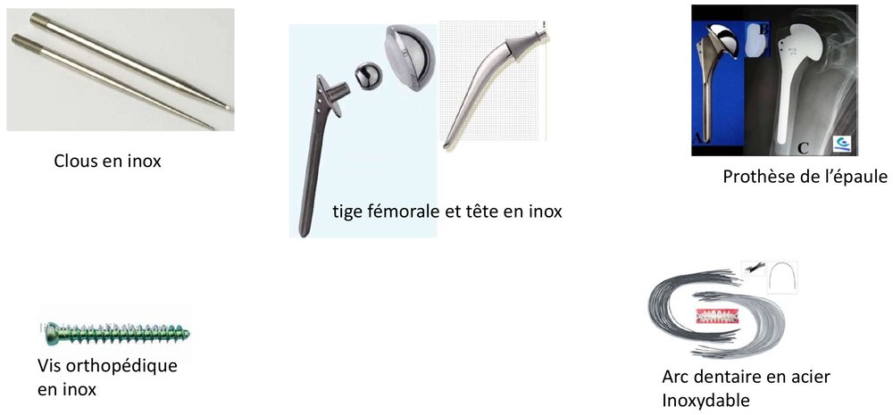
Les alliages cobalt-chrome
- Usure de l'alliage forgeable Co-Ni-Cr-Mo voisine de celle du coulable Co-Cr-Mo : ≈ 0,14 mm/an contre un cotyle en polyéthylène. Mais le Co-Ni-Cr-Mo a un mauvais coefficient de frottement : déconseillé pour les surfaces frottantes.
- Module de Young 220 à 234 GPa, plus que l'inox : conséquences possibles sur le transfert des efforts à l'os.
- Faible usure grâce à sa dureté et sa ténacité : avantage du contact métal sur métal en CoCrMo (prothèse McKee-Farrar : 4,2 µm/an).
- Applications : PTH (encore en place après 38 ans), stents très fins, pièce fémorale de genou, filtre cave, implants dentaires. Artefacts en IRM.
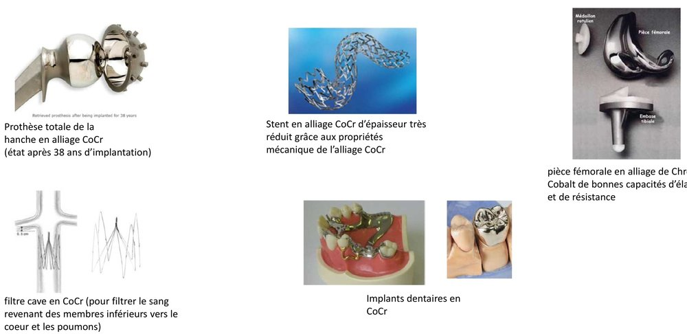
Le titane et ses alliages
| Alliage | À retenir |
|---|---|
| TiAl6V4 (TA6V) | le plus utilisé ; risque de relargage de vanadium toxique |
| Ti-6Al-7Nb | comme le TA6V, meilleure résistance à la corrosion |
| Ti-5Al-2,5Fe | électrodes de pacemaker (qualité du signal) |
| Ti-13Nb-13Zr | orthopédie : module plus faible que le TA6V |
| Ti-15Mo-3Nb | orthopédie : très résistant, module faible, sans Al ni V |
- Chimie : excellente résistance à la corrosion grâce à la couche de passivation TiO₂, inertie chimique. La passivation : traiter le métal à l'acide pour éliminer le fer libre de surface et le recouvrir de cette couche d'oxyde protectrice.
- Biologie : biocompatible, ostéointégration (le matériau se laisse coloniser par les cellules osseuses).
- Mécanique : module (110 GPa) et densité (4,5) plus proches de l'os que le 316L et le CoCr, très résistant ; dépend des éléments d'alliage et des traitements.
- Dureté Vickers : une pointe pyramidale en diamant à base carrée (136°) ; plus l'empreinte est grande, moins le matériau est dur.
Le stress shielding
Un os qui travaille se renforce. Une prothèse trop rigide absorbe les contraintes à la place de l'os (stress shielding) : l'os autour n'est plus sollicité et perd de sa densité, une ostéoporose localisée. Le faible module du titane laisse passer plus d'effort dans l'os et limite ce risque.
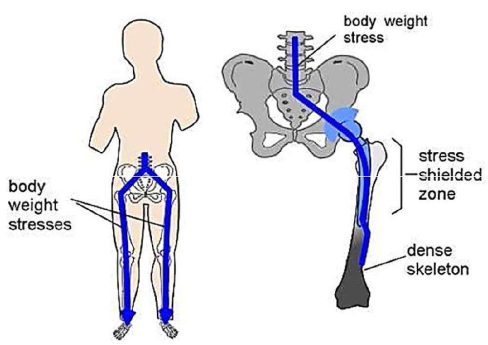
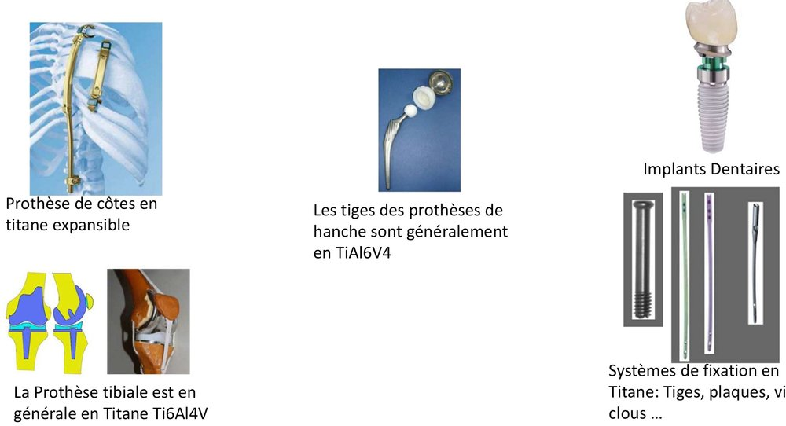
Applications du titane : tiges de hanche en TiAl6V4, prothèse tibiale en Ti6Al4V, prothèse de côtes expansible, implants dentaires, systèmes de fixation (tiges, plaques, vis, clous). Les alliages à mémoire de forme (AMF, Nitinol NiTi) : agrafes d'ostéotomie, plaques, agrafes pour la scoliose, tige de Harrington, stents, arcs dentaires, pinces et pinces-paniers.
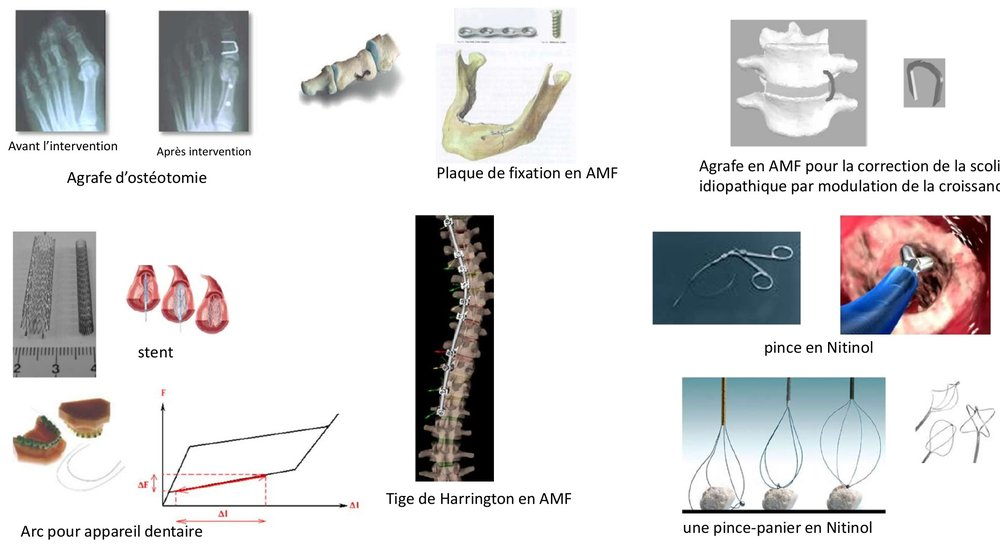
Revêtement et finition de surface
La surface décide de la réponse biologique. Un métal a une énergie de surface élevée : il adsorbe facilement des matières organiques, d'où une couche oxydée et contaminée. Les modifications :
- finition mécanique (polissage, meulage, sablage) : nettoyer, améliorer l'adhérence ;
- finition chimique (alcalin, acide, eau oxygénée, oxydation anodique) : retirer les oxydes, meilleure corrosion, biocompatibilité, bioactivité ;
- finition physique (dépôt en phase vapeur, implantation d'ions) : usure et corrosion ;
- revêtement physique (flamme, projection plasma) : usure, corrosion, propriétés biologiques ;
- enrobage chimique (silanisation, photochimie) : greffer des polymères bioactifs, peptides, protéines, facteurs de croissance.
Comparer les métaux
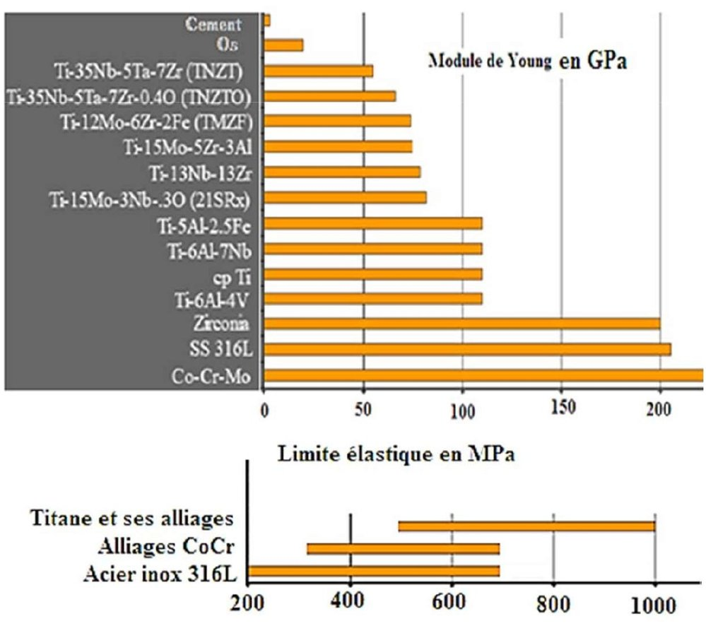
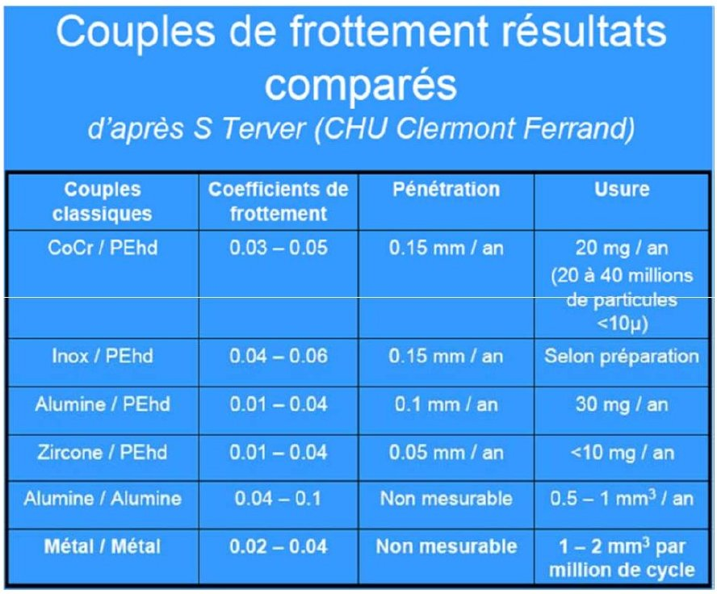
| Métal | Densité (g/cm³) | Module E (GPa) | Usages |
|---|---|---|---|
| Ti et alliages | 4,5 | 100–110 | tiges de hanche, implants dentaires, vis |
| NiTi (Nitinol) | 6,5–6,7 | ≥ 48 | stents, agrafes, guides |
| 316L | 7,9 | 200 | plaques, vis, implants temporaires |
| CoCrMo | 8,3 | 230 | articulations, valves, dentaire |
| Tantale | 16,6 | 190 | fils de suture, agrafes, clips |
Os : environ 20 GPa. Plus le métal est loin de l'os, plus le stress shielding est fort : le titane est le plus proche.
Quels sont les problèmes mal résolus avec les biomatériaux métalliques ?
Voir la réponse
Corrosion électrochimique et durabilité.
Dégradation non électrochimique (protéine/métal).
Réactions immunitaires et hypersensibilité.
Adaptation des propriétés mécaniques.
Frottement et débris.
Quelles sont les deux conséquences de la corrosion d'un implant ?
Voir la réponse
L'implant se désintègre et s'affaiblit mécaniquement.
Les produits de corrosion nuisent aux tissus et aux organes.
Que signifie le L de 316L, et pourquoi le préfère-t-on ?
Voir la réponse
Faible teneur en carbone (0,03 %) : meilleure résistance à la corrosion, il est recommandé pour les implants.
Donne quatre propriétés de l'acier 316L.
Voir la réponse
Durci par écrouissage.
Non magnétique.
Bonne résistance à la corrosion par piqûres en eau salée.
Artefacts en IRM.
Pourquoi l'inox est-il réservé aux implants temporaires ?
Voir la réponse
Il peut corroder sous fortes contraintes avec manque d'oxygène, par exemple sous les vis d'une plaque de fracture.
Pourquoi ne faut-il pas mettre en contact un implant en inox et un implant en titane ?
Voir la réponse
Pour éviter la corrosion galvanique dans l'organisme.
Quels sont les atouts et les défauts du cobalt-chrome ?
Voir la réponse
Atouts : faible usure (dureté, ténacité), bon en métal sur métal, stents très fins.
Défauts : module très élevé (220–234 GPa), mauvais frottement du Co-Ni-Cr-Mo, artefacts en IRM.
Pourquoi le TA6V pose-t-il problème, et quels alliages le remplacent ?
Voir la réponse
Il peut relarguer du vanadium toxique.
Ti-6Al-7Nb (meilleure corrosion), Ti-13Nb-13Zr et Ti-15Mo-3Nb (module plus faible, sans Al ni V).
Qu'est-ce que la passivation du titane ?
Voir la réponse
Un traitement acide qui élimine le fer libre de surface et recouvre le métal d'une couche d'oxyde TiO₂ qui le protège de la corrosion.
Qu'est-ce que l'ostéointégration ?
Voir la réponse
L'aptitude d'un matériau à être colonisé par les cellules osseuses vivantes.
Qu'est-ce que le stress shielding, et pourquoi le titane le limite-t-il ?
Voir la réponse
La prothèse trop rigide absorbe les contraintes à la place de l'os, qui perd sa densité (ostéoporose localisée).
Le titane a un module plus faible, plus proche de l'os : l'os reste sollicité.
Classe Ti, 316L et CoCrMo par densité et par module.
Voir la réponse
Densité : Ti 4,5 < 316L 7,9 < CoCrMo 8,3.
Module : Ti ≈ 110 < 316L ≈ 200 < CoCrMo ≈ 230 GPa.
Cite trois traitements de surface et leur but.
Voir la réponse
Finition mécanique (polissage, sablage) : nettoyer, adhérence.
Finition chimique (acide, oxydation anodique) : corrosion, biocompatibilité.
Projection plasma : usure, corrosion, propriétés biologiques.
Les biocéramiques
Les céramiques et leurs composites servent à réparer ou remplacer des organes, en particulier l'os : ce sont les biocéramiques. Deux catégories :
- bio-inertes ou non résorbables : alumine, zircone, nitrures de silicium, fibres de carbone ;
- biodégradables ou résorbables : hydroxyapatite dense, phosphate tricalcique.
| Propriétés mécaniques | Propriétés biologiques | Autres |
|---|---|---|
| très grande résistance à la compression très dures bonne résistance à l'usure grande résistance au cisaillement non résilientes (ne résistent pas au choc) donc fragiles non ductiles (pas de déformation plastique) | non toxiques non cancérigènes non allergiques non inflammatoires biocompatibles biofonctionnelles pendant toute l'implantation | mauvais conducteurs d'électricité mauvais conducteurs de chaleur température de fusion très élevée |
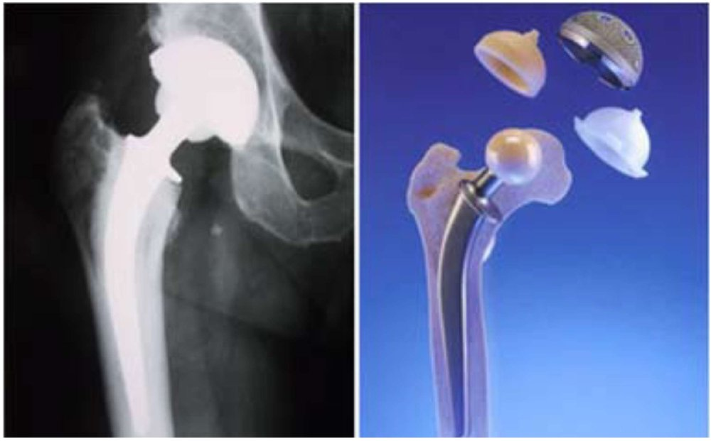
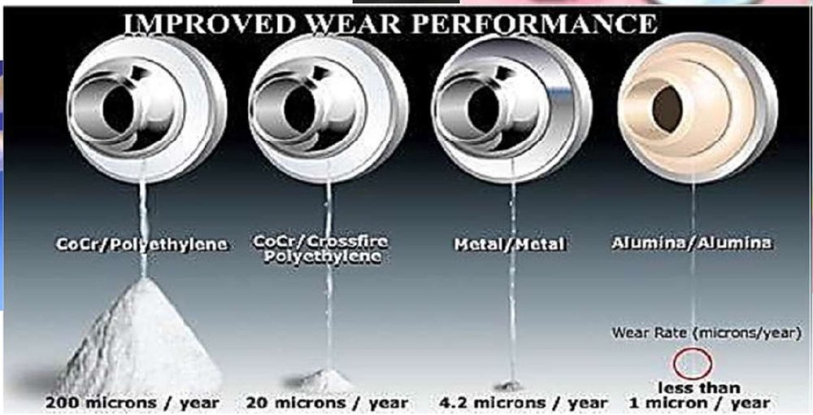
La zircone ZrO₂ (oxyde de zirconium)
- Utilisée pour sa résistance à l'usure, aux chocs thermiques et aux hautes températures (réfractaire). Industrie : pistons de pompes, lames de coupe, électronique.
- Médical : excellente usure (composants durables), inertie chimique, biocompatibilité ; têtes de prothèses de hanche à la place du métal, implants et couronnes dentaires à l'aspect naturel.
- Structure triphasique : cubique (propriétés modestes), tétragonale (propriétés satisfaisantes), monoclinique (plus de cohésion des grains, plus dense).
- Fabriquée par frittage (poudres agglomérées par chauffage sous forte pression), à partir du zircon ZrSiO₄. Fusion très élevée (2953 K), grande stabilité chimique.
- Propriétés un peu inférieures à l'alumine. À haute densité : très biocompatible, très résistante à l'usure, faible frottement contre le polyéthylène UHMWPE.
- Exemple 3Y-TZP (ZrO₂ + 5,2 % Y₂O₃) : grains < 0,5 µm, flexion 1150 MPa, module 200–250 GPa.
| Propriété | Alumine | Zircone |
|---|---|---|
| Module de Young (GPa) | 380 | 190 |
| Dureté (Mohs) | 9 | 6,5 |
| Densité (g/cm³) | 3,8–3,9 | 5,95 |
| Taille des grains (µm) | 4,0 | 0,6 |
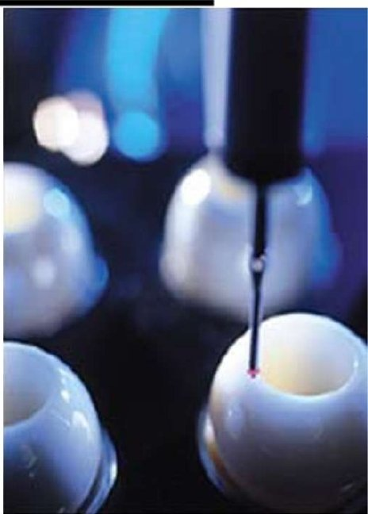
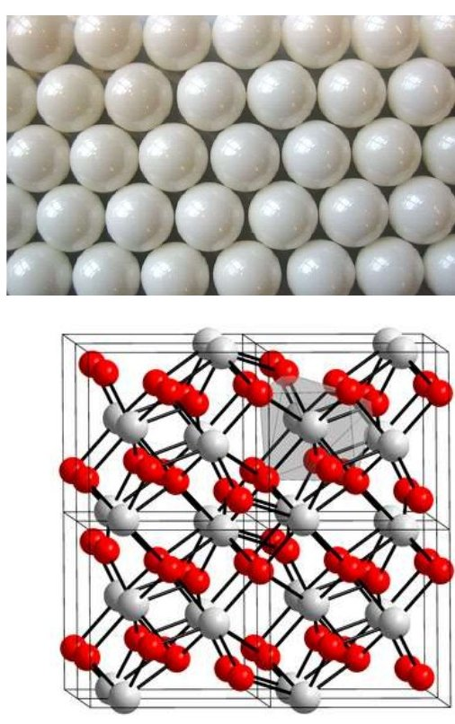
La prothèse totale de hanche en quatre pièces

- La cupule métallique, impactée dans l'os du bassin.
- L'insert (métal, céramique ou polyéthylène), mis dans la cupule.
- La tête (céramique ou métal), placée sur la tige.
- La tige, placée dans le canal fémoral.
Les problèmes des céramiques
- Mal résolus : les mécanismes de dégradation, la durabilité, la résistance à la fracture, l'activité de surface, l'adhésion des protéines et des cellules.
- Céramiques biorésorbables : mesurer et contrôler la biorésorption et son effet sur le tissu, et la calcification.
- La calcification : un processus pathologique, un dépôt de sels de calcium (surtout de l'hydroxyapatite) dans les tissus mous.
Quelles sont les deux catégories de biocéramiques, avec des exemples ?
Voir la réponse
Bio-inertes (non résorbables) : alumine, zircone, nitrures de silicium, fibres de carbone.
Résorbables (biodégradables) : hydroxyapatite dense, phosphate tricalcique.
Quelles sont les propriétés mécaniques des biocéramiques ?
Voir la réponse
Très grande résistance à la compression, très dures, bonne résistance à l'usure, grande résistance au cisaillement.
Non résilientes donc fragiles, non ductiles (pas de déformation plastique).
Quelles sont les propriétés biologiques des biocéramiques ?
Voir la réponse
Non toxiques, non cancérigènes, non allergiques, non inflammatoires, biocompatibles, biofonctionnelles pendant toute l'implantation.
Céramique ou métal : laquelle conduit bien l'électricité et la chaleur ?
Voir la réponse
Le métal. La céramique est mauvaise conductrice d'électricité et de chaleur, avec une fusion très élevée.
Pourquoi utilise-t-on la zircone en médecine ?
Voir la réponse
Excellente résistance à l'usure, inertie chimique, biocompatibilité.
Têtes de prothèses de hanche, implants et couronnes dentaires.
Quelles sont les trois structures cristallines de la zircone ?
Voir la réponse
Cubique (propriétés modestes), tétragonale (satisfaisantes), monoclinique (plus de cohésion, plus dense).
Comment fabrique-t-on la zircone ?
Voir la réponse
Par frittage : agglomération de poudres par chauffage sous forte pression.
Compare l'alumine et la zircone : module, dureté, densité.
Voir la réponse
Alumine : 380 GPa, dureté 9, densité 3,8–3,9.
Zircone : 190 GPa, dureté 6,5, densité 5,95.
Donne les quatre pièces d'une prothèse totale de hanche et leur matériau.
Voir la réponse
Cupule métallique, dans le bassin.
Insert en métal, céramique ou polyéthylène.
Tête en céramique ou métal.
Tige dans le canal fémoral.
Quel couple de frottement s'use le moins ?
Voir la réponse
Alumine/alumine : moins de 1 µm/an (contre 200 µm/an pour CoCr/polyéthylène et 4,2 pour métal/métal).
Qu'est-ce que la calcification ?
Voir la réponse
Un dépôt pathologique de sels de calcium (surtout de l'hydroxyapatite) dans les tissus mous.
Quels sont les problèmes mal résolus avec les céramiques ?
Voir la réponse
Mécanismes de dégradation, durabilité, résistance à la fracture, activité de surface, adhésion des protéines et des cellules.
Pour les résorbables : contrôle de la biorésorption et calcification.